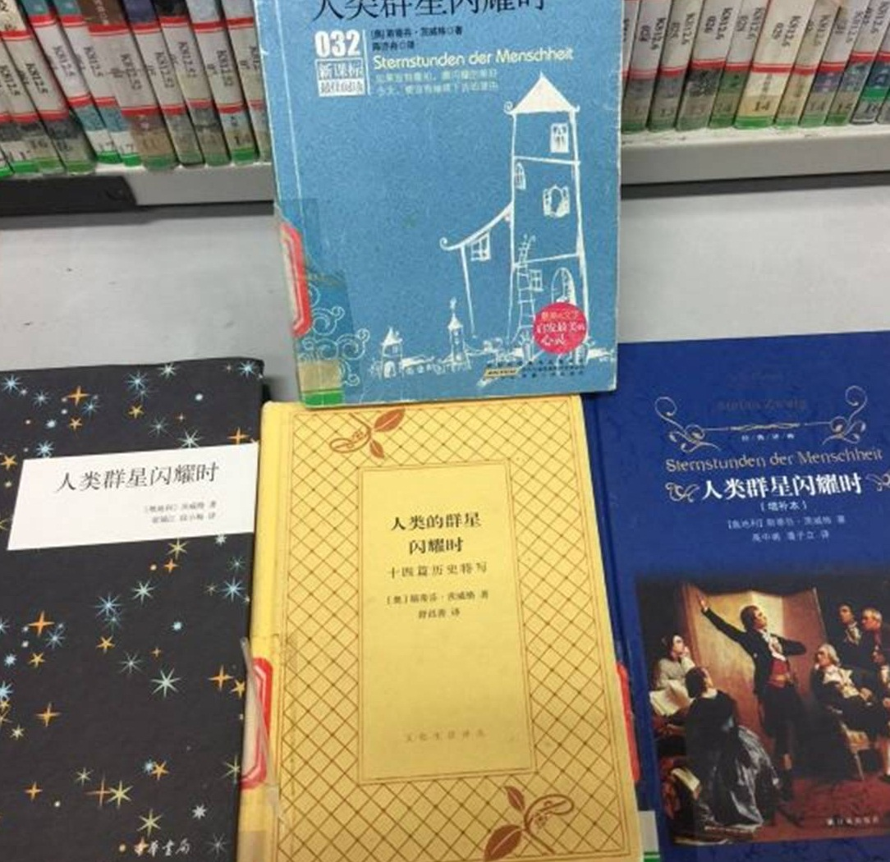

在这个问题下，我没有看到那种比较令人满意的回答——即那种读过三种以上的中译本的、同时又能系统性地、能够用理论与对比，而不是纯个人阅读观感来理性地说明“为什么A的翻译比BCD更好”的回答。我想这种回答，才是答主和进入这个问题的人想要得到的答案。
凑巧的是，《人类群星闪耀时》恰好是我特别喜欢的一本书，它对我个人的历史观产生了很大的影响（从对“唯物史观”的认同到对“英雄史观”的喜爱），所以我一直在寻找这本书“最好的中译本”。迄今为止，我看过至少5个译本，自己家里就收藏了三种译本，所以我斗胆来回答这个问题。
在我之前的知乎回答——
里提到了很多我之前看过的，“被翻译毁掉的好书”，那个问题下也有人问我——答主你觉得什么样的翻译是好翻译？
这个问题太大了，毕竟从严复的“信达雅”到鲁迅的“直译”到钱钟书“化境”，甚至是当代译介学研究中推崇的“创造性叛逆”，关于“好的翻译”，无数大神都给出了彼此相悖的的回答，我并不是要下一个“终极定义”，只是就自己看了不少不少社科类、经济类和文学类的译本的经验，以一个译本爱好者的身份，诚恳地谈一谈我自己的看法。
我先提四个大的原则性的标准——
第一，一定要看看直接翻译。
直接翻译的意思是——原著是哪种语言写作的，就看这个精通此语种的译者翻译的著作，不要看二手译本（比如非英文原著的英译本）。
这一点其实很好理解，“翻译”这个工作，本身就是因为人类没有统一的语言而诞生的工作，是为了为了把其他语言人的思想和情感尽可能传神而不曲解地传达给不懂这种语言的人，但是因为人类语言和文字自身的缺陷，不论怎么努力，还是会在翻译的过程中对原文的神韵有所损耗，换言之，直译已经是一种妥协了，何况二遍翻译？
举一个直观的例子——
两本《第二性》，原著是法国人波伏娃用法文写作的，先不论译者水平如何，只说第一本是用英译本在译中文的，而第二本郑克鲁先生版本是法语直译——那么我们阅读就无条件选择法译本。
同理，《人类群星闪耀时》的作者茨威格是奥地利人，原著的德语写作，而且作品以“语言优美、文笔极佳、富有激情和感染力”著称，我阅读的时候都恨自己不懂德文，自然不可能接受市面上所有的英译本译中对原著的二次损耗了。
市面上好几种译本，目前不知道哪本是英译本，但是我读过最差的版本是这本——

译者是张伟，当时没看译者信息，不知道这是不是英译本。
我怀疑是英译本的理由，是因为这本的语言和文笔，都比我下面要说的几个德语直译本相差太远，不知道是译者的水平的问题，还是因为是英译本的缘故。
第二、只看一个译者通译的作品，不看合译本。
如果我们认同“翻译”其实是一种本土化的再创作的话，那么不看一人以上的译者合译的书的理由也是清晰明了的——创作是统一的创作思路和一以贯之的风格的，而不同的人，各自的水平和思路都不统一，合译往往是因为赶工而不是因为其他的原因，这样出来的作品，往往无法令人满意。
楼上很多答主提到了潘子力老师的译本，应该是我手上的这一本——
大家提到这本译作大多数都只提潘子力老师的名字，但是是实际上这本是潘老师和高中甫老师两人合作翻译的，这两位老师都精通德语，所以规避掉了第一个问题，但是这本书却把合译作品的弊病展现得淋漓尽致——这本译作，其中我最喜欢的章节，基本都是高中甫老师翻译的，比如《玛丽恩巴德哀歌》，而对其中潘子力老师翻译的《不朽的逃亡者》等章节相当无感……
这就很尴尬了。这也呼应我说“不要看合译本”的原因——风格不统一，水平不统一……简而言之，是出版社的预算不太足，时间不太足，诚意呢，自然是大大地不足了。
第三、都是好的译者的前提下——看新不看旧。
前两个原则，我相信只要是阅读过一定译著的阅读者，都会相当认同，但是第三个原则，可能稍微有些难以理解。简单地说，任何译者在翻译时的遣词用句，都必然会带有某种意志，而语言和观点是会随着时间的变迁而产变化的。这就导致同样一本书，翻译相差二十年可能会展现出完全不同的阅读感受（比如批判和赞美的视角截然相反）
虽然这并不是绝对的，但是就我个人的经验来看，如果译著的年代太过久远（译文第一版已经超过20年）的话，用词和行文一定会对阅读造成障碍。
最典型的例子，就是殷海光老师的经典译著《到奴役之路》，我当初被社科出版社的《通往奴隶之路》折磨得是欲仙欲死，写对“译著的吐槽”，第一个就是拿它开炮——
这本书真是翻译时间又老，语言又晦涩难懂……
为了不错过这本经典著作，找来了台湾殷海光老师的译作来看，虽然殷老先生的时间更早，但是语言和翻译逻辑胜出社科版不知道凡几，我可算是读下来了……不过遗憾的也是实在是太老了，所以给出了“最好重译”的建议。
下面我要说的，可能很多朋友要不同意了——我觉得这个问题，同样存在知乎上大家公认的最佳译本舒昌善老先生翻译的《人类的群星闪耀时》上（舒老先生的版本，都是多了一个‘的’字的，不知道有人注意无？）
舒老先生的版本，最早是86年就已经出版了，多年来再版多次，可能是是国内流传最广影响最大的《人》的翻译版本，而当初我第一次在大学图书馆中看到的，就是2004年左右由广西师范大学出版社再版的版本。
老先生的语言是极好的，精通德语，译作等身，但是我当初看2004版本时候就有一个感觉，很多东西不够简洁，表达不够有力和流畅，和我之前阅读很多八九十年代的译作的感觉很像，一查，果然是80年代的译作的再版，才第二版……这种感觉，读上世纪和本世纪的译作都上了20本的人，我相信都明白这种感觉。
我从书中随便找两段，给大家具体举例来说——
第一张图是舒版，第二张是姜版。
对比很明显——同样的一句话，舒版的句子结构太过冗长，意义也不甚清晰，而我在果麦文化的朋友送我的译者姜乙的版本，就叙事清晰。
我之前倒是听说过姜乙的名头——他翻过黑塞的名著《悉达多》，译本的豆瓣评分高达9.3，是诸多版本中的最高分，在豆瓣这个对于文本还比较苛刻的社区，这已经已经可以称为 “神级翻译”之一，能看到这位译者翻译我喜欢的《人类群星闪耀时》，我是非常开心的，而目前读下来，这也是我10年来看过最佳的茨威格译作了。
也验证我说的“都是好译者，就看新不看旧”的原则的一定合理性。
第四,不要看译者私货过多的作品。
虽然说翻译可以看成一种再创作（特别是在译介学研究中，非常推崇创造性叛逆）但是严复先生提出的翻译原则“信、达、雅”得到了最多译者的认同，算是给翻译画下了红线——如果达和雅都是能力和风格的要求，可能限制没有那么死，那么“信”就是最基本的红线规则了——任意更改原作的意思，是对原作者和读者的双重不尊重。
这方面据我所知，最大的反例就是刘仲敬的译作《英国史》了，其中私货之多已经到了令人发指的地步，被中国历史界如此团结一致批判的译作，我还从没见过第二个。
不过我这点是为了说全我的“什么样的译作看不得”的标准，而不是指责任何一个版本《人类群星闪耀时》的译本，哪怕是舒昌善老先生每章前面的“译者题记”，在我看来也是一种对读者善意的科普，而不是个人的私货（除了《不朽的逃亡》前面吐槽茨威格的“太平洋是欧洲人先发现”的这个欧洲中心论的大槽点之外，基本上没有私货）
上面说了那么多，上面说的都是一些“下限”标准，就是如果不碰上面的几点的话，基本能保证这个译本不会太离谱，但是，不好的译作都是相似的，好的译作却各有各的好处——你怎么就认定你推荐的姜乙版的《人类群星闪耀时》就是最佳版本呢？
这个问题的答案，其实最简单——看不同的译本，辅助一定的翻译理论，然后用心去比较。
茨威格的原著篇幅颇长，又是一部值得每个人认真阅读的旷世名著，我在这里的比较难免挂一漏万，但是只是这一个片段，我们就能看出三个译本之间的区别。
我们可以主要对比三个版本——舒昌善版，梁锡江版，姜乙版
茨威格的语言极美且富有想象力，“如何把茨威格原著中那些语言和思想美，尽可能地传递给中文读者”，是每个翻译《人类群星闪耀时》的译者都在努力的事情，而如果要对比译本的好坏，《人类群星闪耀时》书中14个伟大瞬间的章节，无疑是描述陀思妥耶夫斯基（他是茨威格最喜欢的作家之一）从死刑场被救回的章节——《英雄的瞬间》——最为合适，因为这个章节是本书唯一一个以长诗写作的章节，而我们都知道，翻译诗歌，想来最考验译者的功力——包括语言功底、韵律水平、意向传达等。
舒版
梁版
我圈起来的这两句翻译，就是“拗口”一词的生动体现。
姜版
说真的，舒版和梁版都是多年前看过的了，这次读了姜乙的译本感觉酣畅淋漓，齿颊生香，是之前读《人类群星闪耀时》书都未有过的感觉，上知乎要安利此译本看到了这个问题，而为了回答这个问题特意翻出来之前看过的译本重读……才发现风格和语言对译本的阅读快感有这么大的影响——
舒昌善译本，是三个译本中相对平衡的一版，虽然没有在翻译的时候特别重视把茨威格在德语原著中那种激昂优美的语言用最贴切的中文语言传递出来，但是胜在平实准确，相比较姜乙版之前的市面上其他的译本，已经是最让人“有如沐春风之感”的译本了。
梁锡江译本相对更加拗口，不管是翻译诗歌还是文本，都较为忽视原文艺术风格的传达，节奏感是三本书中最差的……虽然也是不错的译本，但是说实在的，是我觉得三个版本中，“最不燃”的，没有特别好地传达茨威格那种读来让人热血沸腾、“恨不见古人”的艺术风格。
而姜乙的译本，在最大的程度上保证“信”的同时，对于原文诗体的艺术风格还原的简直淋漓尽致，如果你试着朗读过这三个译本的选段，你就会发现姜乙版的语言韵律和节奏，是最符合我们对于“诗”的定义的，音节铿锵、节奏划分精准。为此我还专门向果麦文化的朋友请教过姜乙老师是否有音乐背景——结果的确如我所料，姜乙老师有科班级的歌剧研究背景。
之所以茨威格的这本传记，被许多人称之为“传记里的传记”，不光光是因为这是14篇超越了时代的命运特写，更重要的是作为一个诗人，茨威格本人写作这本书时，所传达的不仅仅只是历史故事与命运瞬间的弧光，他的作品里始终都存在着一种诗性，这本书不仅仅只有“看”的艺术，“听”的艺术同样蕴含其中。（这样的例子在书中数见不鲜，比如亨德尔的章节，假如你听过亨德尔的《弥赛亚》，那么你可以对比一下几个译本的文字差异，你会发现姜乙的版本确实给人在节奏感上是最为符合《弥赛亚》的节律的，在此就不赘述了）
总结一下，我觉得用钱钟书老先生最推崇的“化境翻译说”非常能够说明姜乙译本的特点。——钱钟书把“化境 ”视为文学翻译的最高理想 ，他说：“把作品从一国文字转变成另一国文字 ，既不能因语文习惯的差异而露出生硬拗口的痕迹又能完全保存原作的风味，那就算得入于 ‘化境’”（孙致礼 ，2002）。
我不通德文，所以我也无法从语言翻译本身去做一些更精准的对比，但是我想绝大多数的读者和我的状况应该是一样的，我们所需要的是一个语言符合当下审美，行文与节奏尽可能地还原作者的本义，没有佶屈聱牙的用词或者华而不实的炫技，视翻译为翻译，而不是二次创作的译本。
那么，基于以上的一些个人浅见，我认为果麦文化出的这版姜乙《人类群星闪耀时》，的确是迄今为止，最好的《人类群星闪耀时》译本。
赞同 32541 条评论
李乐 江苏苏韬律师事务所 执业律师
恰好路过南图，随手拍了几张照片，可作说明。
这本书的中译本真不少，一排书架不同译者或者同一个译者不同出版社的好多种。潘子立的不同出版社的出版的最多，舒版的最少，只看到三联版和文化出版社版。下面上图，大家可自行对比差别。
首先来个不完整的全家福

拍的时候还没意识到有这么多版本。下面重点对比人气最高的潘版和舒版
这是目录和部分章节对比，左边短的为舒版，右边长的为潘版。风格差别已经很明显了
两本书的名称翻译的都不一样
舒版的叫 人类的群星闪耀时
潘版的叫 人类群星闪耀时
题目都能透露出作者翻译两本书的些许想法。舒更传统，潘更富活力。光题目，我是喜欢潘版，简练干脆富有韵律感。
但说到内容，个人更喜欢舒版，语言文字更加平滑自然，潘版总有种用力过猛的感觉。舒版有老者阅尽沧桑的凝重感，更贴合主题。潘版总让人觉得过于跳跃，更像时尚文学。
先读的是人民文学版，感觉前言和第一章有些拗口，就换了个中华书局版（梁锡江 段小梅 译），目前已读到“一夜天才”，暂未发现拗口的地方，部分段落读起来甚至有荡气回肠的感觉。
下面是三个版本的“千年帝国的陷落”的结尾部分，个人比较喜欢梁版的文字感染力。
1，江苏凤凰文艺版（梁锡江 译）——看网友评论找到的，我读的版本文字相同。
“......基督教的圣坛被拆除了，无辜的马赛克被刷上了石灰，而高高矗立在圣索非亚大教堂顶部的十字架，千年以来一直伸展着它的双臂，环抱着尘世的一切苦难，现在却跌落尘埃，发出轰然巨响。
石头坠落的巨大声音在教堂里回响，同时传向很远很远的地方。因为整个西方世界都在为它的倒坍而震颤。噩耗在罗马、在热那亚、在威尼斯回响，犹如预警的巨雷传向法国和德国。欧洲万分恐惧地认识到，由于他们的麻木不仁，一股天谴般的破坏力量竟从那座被遗忘的小门——不祥的凯尔卡门闯了进来，这股暴力将要遏制和束缚欧洲达数百年之久。然而历史犹如人生，业已失去的瞬间不会因为抱憾的心情而重返，仅仅一个小时所贻误的东西，用千年的时光也难以赎回。”
2，人民文学版（张玉书 译）
“......祭坛被推倒，虔诚的马赛克画面被涂上颜料，索菲亚大教堂高高耸立的十字架，一千年来张开双臂，拥抱人世间的全部苦难，如今发出沉闷的响声，轰然倒地。
这十字架坍塌的声音，犹如巨石击地，响彻整个教堂，在教堂外的远方回响。整个西方世界为它的轰然倒塌而震撼。惊耗在罗马，在热那亚，在威尼斯引起反响，它像警醒世人的隆隆雷声，一直向前滚动，传向法国、德国，整个欧洲惊悚战栗地认识到，由于他们迟钝的冷漠，通过那道被人遗忘、招致灾祸的凯尔卡门，一种命中注定的破坏性的暴力夺门而入。这股势力将束缚欧洲达数百年之久，使其无从发挥自己的力量。但是历史好比人生，遗憾无法追回失去的瞬间，一小时造成的疏漏和贻误，一千年也无法弥补和赎回。”
3，上海文艺版（姜乙 译）
“......祭坛被毁，虔诚的马赛克被粉刷上石灰，而索菲亚教堂中高高悬挂的十字架那伸展了千年、拥抱尘世间一切疾苦的双臂轰然倒下。
十字架倒下的巨响响彻教堂，也传到堂外遥远的远方。整个西方世界都在为这具十字架的倒下而震颤。噩耗很快传遍罗马、热那亚、威尼斯和佛罗伦萨，它像预言的惊雷般滚滚响遍法国和德国。欧洲人这才惊慌地意识到，由于他们昏庸的置若罔闻，这股难以阻挡的破坏力，竟从那座被人遗忘的不幸的凯尔卡门中闯了进来。这一暴行将上百年地遏制欧洲的势力。然而历史和人生一样，瞬间酿成的大错，即使用尽千年，也无法赎回倏然造成的损伤。”
有幸看了李杰的译本，语言流畅简洁，且优美有激情，相比之下，其他的译本可以说都是文字垃圾，垃圾。别浪费时间了，只有李杰才是最好的。
我觉得孙淑娟译的不错，潘版有些句子的情感，怎么说呢，不是我想要的。
第一个是潘版，第二个是孙版。
综合一下答友的，又综合自己所知，这本书翻译的人太多了，版本更是繁杂，现统计了9个版本供大家品评研究。这已知的19个人翻译的，够庞大的了。
1，舒昌善，三联
2，张玉书，人民文学
3，姜乙，上海文艺
4，高中甫，潘子立，时代文艺
5，邵灵侠，开明出版社
6，李杰
7，孙淑娟
8，张伟
9，陈亦舟
10，梁锡江，段小梅，中华书局
11，彭浩容
12，吴秀杰
13，亦言
14，黄婵
15，畲田
16，胡志刚
17，佟嘉毓
18，樊华
19，戴光年